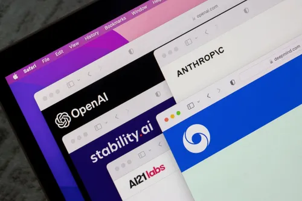
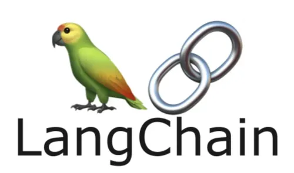
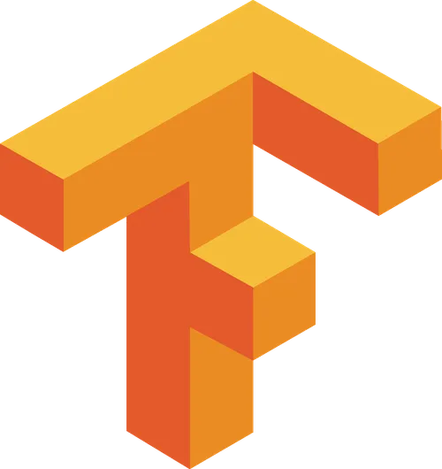
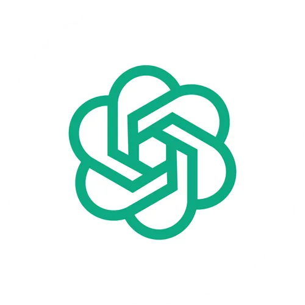
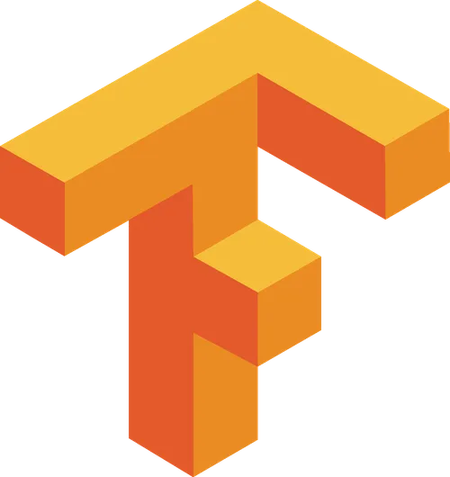
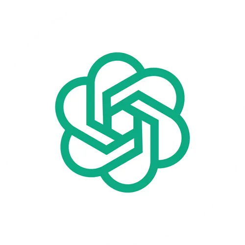

ProposaGen - Gen AI For Proposals
310621243048
310621243022
310621243020
Problem Statement
Generative AI solutions are revolutionizing the way proposals are developed, tailored specifically to meet customer requirements. These AI tools are designed to generate customized proposals that align perfectly with the unique demands of each client. By leveraging advanced algorithms and machine learning techniques, businesses can now create proposals that are not only accurate but also highly personalized, ensuring a better fit for the client’s needs.
An example of such an AI system is one that studies multiple technical documents and engineering designs to generate personalized product proposals for clients. This system intelligently analyzes vast amounts of data, extracting relevant information and understanding complex requirements. By doing so, it can craft proposals that incorporate the specific technical details and design elements that the client requires, making the proposal process more efficient and precise.
These AI-driven solutions address the growing need for efficiency and accuracy in proposal development. They significantly reduce the manual effort and time required to create proposals, providing businesses with a competitive edge. With the ability to deliver highly tailored proposals that meet client needs, companies can enhance their chances of securing contracts and building stronger client relationships. As a result, generative AI tools are becoming an invaluable asset in the modern business landscape.
Objective
Main Objective:
- To leverage Generative AI solutions for developing highly personalized and accurate proposals tailored to meet specific client requirements.
- To significantly reduce the manual effort and time required in the proposal development process, providing businesses with a competitive edge.
- To enhance the chances of securing contracts and building stronger client relationships through the delivery of tailored proposals.
Approach
Utilizing Large Language Models (LLMs):
Data Collection: Gather extensive data from multiple technical documents and engineering designs relevant to the clients’ needs. Data Processing: Use advanced algorithms and machine learning techniques to analyze and understand the complex requirements from the collected data. Content Generation: Employ LLMs to generate customized and precise content for proposals, ensuring alignment with client specifications. Integration with LangChain:
Automation: Implement LangChain to automate the workflow of proposal generation, from data input to final output. Scalability: Use LangChain’s robust infrastructure to handle large volumes of data and generate multiple proposals efficiently. Flexibility: Leverage LangChain’s modular design to integrate with various data sources and adapt to different client requirements.
Approach (contd.)
Personalization and Accuracy:
- Tailored Proposals: Customize proposals to incorporate specific technical details and design elements required by clients.
- Precision: Ensure high accuracy in the generated proposals by continuously refining the LLM models with client feedback and additional data.
Efficiency and Competitive Edge:
- Reduced Manual Effort: Automate repetitive and time-consuming tasks involved in proposal creation.
- Time Savings: Significantly decrease the time taken to develop proposals, allowing businesses to respond quickly to client needs.
- Competitive Advantage: Provide businesses with a unique selling proposition by delivering high-quality, personalized proposals faster than competitors.
Approach (contd.)
Building Stronger Client Relationships:
Client Satisfaction: Enhance client satisfaction by delivering proposals that precisely meet their needs and expectations.
Relationship Building: Foster long-term relationships with clients through consistent delivery of high-quality, tailored proposals.
Future Enhancements:
- Continuous Improvement: Implement a feedback loop to continuously improve the LLM models and the overall proposal generation process.
- Expansion: Explore the potential of expanding the solution to other domains and industries, beyond technical and engineering proposals.
Solution Overview: Key Components & Data Processing
- Components:
- LLMs: Core technology for understanding and generating content.
- LangChain: Automation framework for seamless workflow integration.
- Data Sources: Technical documents, engineering designs, client-specific data.
Data Collection & Processing: - Aggregating relevant documents and client requirements from various sources. - Using advanced algorithms to clean, filter, and organize data for optimal analysis.
Solution Overview: Content Generation & Integration
- Content Generation:
- Deploying LLMs to generate customized and precise proposal content.
- Tailoring content to incorporate specific technical details and client needs.
- Integration with LangChain:
- Automation: End-to-end proposal generation process.
- Scalability: Efficient handling of large data volumes and multiple proposals.
- Flexibility: Adapting to various data sources and client requirements.
Solution Overview: Personalization, Efficiency & Client Relationships
- Personalization and Accuracy:
- Ensuring highly personalized proposals that meet specific client needs.
- Achieving precision through continuous model refinement and feedback loops.
- Efficiency and Competitive Edge:
- Reducing manual effort and speeding up the proposal creation process.
- Providing a competitive advantage with high-quality, personalized proposals.
- Building Stronger Client Relationships:
- Delivering proposals that meet client expectations, enhancing satisfaction.
- Fostering long-term client relationships through consistent quality and reliability.
Technical Implementation: Technologies & Tools
Technologies:
- Large Language Models (LLMs): Core AI technology for understanding and generating proposal content.
- LangChain: Framework for automating the workflow and integrating various components seamlessly.
 
Tools:
- Data Processing Tools:
- Python, Pandas, Numpy
- Machine Learning Libraries:
- TensorFlow, PyTorch
- APIs:
- OpenAI GPT API
  
 
Technical Implementation: Workflow & Integration
Workflow:
- Data Ingestion: Collecting data from various sources (documents, designs, client requirements).
- Preprocessing: Cleaning and organizing data using Python and Pandas.
- Model Training: Using TensorFlow and PyTorch to train and fine-tune LLMs on the preprocessed data
Integration:
- LangChain: Automating data flow and model interactions.
- APIs: Integrating OpenAI GPT API for real-time content generation.
- Continuous Feedback Loop: Incorporating client feedback to refine and improve the model continuously.
Technical Implementation: Architecture & Deployment
Architecture:
- Modular Design: Flexible and scalable architecture to handle various data sources and client requirements.
- Microservices: Using microservices architecture to ensure components can be developed, deployed, and scaled independently.
Deployment:
- Cloud Infrastructure: Deploying the solution on cloud platforms like AWS or Azure for scalability and reliability.
- CI/CD Pipeline: Implementing Continuous Integration and Continuous Deployment (CI/CD) using tools like Jenkins and Docker to streamline updates and improvements.
- Monitoring and Maintenance: Using monitoring tools like Prometheus and Grafana to ensure the system is running smoothly and to identify areas for improvement.
Demonstration: Prototype Functionality & Features
Recorded Demonstration:
- Overview:
- The demonstration begins with an introduction to the user interface, highlighting its intuitive design.
- Users are guided through the process of inputting data sources including technical documents and client requirements.
Recorded Demonstration
- Step-by-Step Walkthrough:
- Step 1: Data Ingestion – Users upload relevant documents and input specific client needs.
- Step 2: Data Preprocessing – The system cleans, filters, and organizes the data automatically.
- Step 3: Content Generation – LLMs generate draft proposals tailored to the input data.
- Step 4: Customization – Users can further customize proposals through an interactive editor.
- Step 5: Finalization – The system reviews and finalizes the proposal, ensuring it meets all specified requirements.
- Key Features:
- Automated data processing and content generation.
- Interactive proposal customization.
- Real-time feedback and adjustments.
Future Enhancements: Improving the Project
Potential Enhancements:
- Advanced Data Analytics:
- Incorporate advanced analytics to provide deeper insights and enhance proposal quality.
- Enhanced Personalization:
- Utilize machine learning to refine and enhance personalization based on client interaction data.
Potential Enhancements
- Integration with Business Tools:
- Integrate with CRM and ERP systems to streamline the entire proposal process.
- AI Model Improvements:
- Regular updates and training of LLMs to stay current with industry standards and evolving client needs.
- User Feedback Mechanism:
- Implement a feedback mechanism to continuously gather and incorporate user inputs for ongoing improvement.
Project Plan: Building a Functional Prototype
Project Plan Overview:
- Phase 1: Planning and Research
- Define project scope, objectives, and deliverables.
- Conduct market research and gather requirements from potential users.
- Phase 2: Design and Development
- Design the system architecture, focusing on modular and scalable components.
- Develop core components using LLMs and LangChain for data processing and automation.
- Phase 3: Testing and Refinement
- Perform unit and integration testing to ensure all functionalities work seamlessly.
- Collect feedback from initial users to identify areas for improvement and refinement.
- Phase 4: Deployment and Demonstration
- Deploy the prototype on a cloud platform for accessibility and scalability.
- Prepare a detailed recorded demonstration showcasing the prototype’s features and functionalities.
Timeline:
- Month 1-2: Planning and Research
- Month 3-4: Design and Development
- Month 5: Testing and Refinement
- Month 6: Deployment and Demonstration
Milestones:
- End of Month 2: Completion of research and finalized project plan.
- End of Month 4: Prototype design and initial development completed.
- End of Month 5: Testing phase completed, incorporating user feedback.
- End of Month 6: Successful deployment and recorded demonstration prepared.